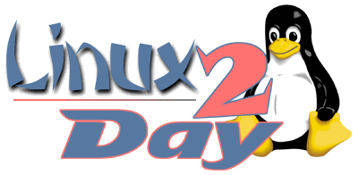

Secondo incontro - Utilizzare Linux come server
Programma
Atti ufficiali
Slide
Introduzione storica (Paolo Cremascoli)
Introduzione a Linux (Andrea Mauro)
Internetworking per reti aziendali (Luciano Ghezzi)
Dispositivi di massa fault-tolerant (Andrea Gelmini)
Integrazione in reti eterogenee (Marco Ghidinelli e Michele Bonera)
Introduzione alla sicurezza (Paolo Colombini)
La sicurezza con Linux (Francesco Tomasoni)
Per saperne di più
Per contattare gli oratori